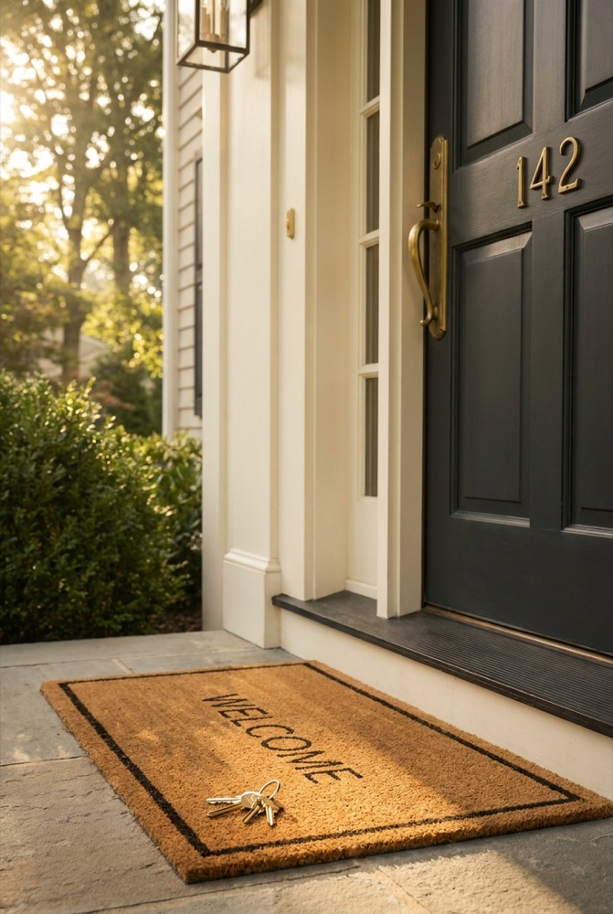

Buying a House in New Jersey for the First Time: The Step-by-Step Process
To buy your first home in New Jersey: get pre-approved, check your NJHMFA eligibility, choose the town before the house because taxes vary sharply, then offer. Signing starts a three-business-day attorney review, followed by inspection and 30 to 45 days of underwriting. Eligible buyers can layer up to $22,000 in state down payment assistance.
| By Jorge Ramirez

Last updated · August 2026
TL;DR
NJ's first-time buyer market in 2026 is tighter than most newcomers expect. Here's what to actually budget — down payment (3.5-10%), closing costs (2-3% of purchase), inspection reserves ($5-10K), and the NJ-specific programs most buyers miss, including up to $22,000 from NJHMFA when the First Generation award stacks on the standard down payment assistance. Starter homes in Linden, Rahway, Fanwood, and Cranford still clear under $600K.
First-time buyers in NJ get two reality checks on Day 1: property taxes and competition. After helping first-time buyers since 2017 — I've walked first-time buyers through 40+ homes in one summer — the ones who end up happy always start with the number, not the house. This 2026 guide covers what you actually need to know: affordability math, the NJHMFA programs most agents forget to mention, the real closing cost breakdown for NJ, the starter-home towns that still work under $600K, and the five mistakes I watch first-time buyers make over and over.
How Much Home Can I Afford in NJ as a First-Time Buyer?
Before you browse a single listing, you need your number. Not the pre-approval ceiling a lender hands you — your honest monthly number, the one that still lets you save, travel, and absorb a furnace repair. The math for NJ is different than almost any other state, and the reason is simple: property taxes.
Traditional affordability rules of thumb (28% of gross income on housing, 36% on total debt) break down in NJ. On a $500,000 home with a 30-year fixed mortgage at 6.5% and 10% down, the principal and interest alone is roughly $2,845 per month. Reasonable in a vacuum. Now add NJ's effective property tax rate of 2.2-2.4% statewide — that's another $917-$1,000 per month escrowed. Homeowners insurance runs $120-$180. If your down payment is under 20%, add $150-$250 for PMI. You're now at $4,050-$4,275 per month all-in on a $500K home.
That's why I tell first-time buyers: build your budget from taxes down, not mortgage up. A $500K home in Cranford with $12,000/year in taxes has a completely different monthly payment than the same $500K home in parts of Essex County paying $16,000/year. Same mortgage, same rate, wildly different monthly cost.
A practical framework I use with my first-time buyers: take your stable gross monthly income, cap total housing at 30-33% of it, and then back into the purchase price using your target town's actual tax rate. The town comparison tool on our site lists effective tax rates for all 138 NJ communities I cover — check it before you fall in love with a listing.
Quick reality example. Household income $140,000/year ($11,667 gross monthly) with $600/month in student loans and a car payment. At a 33% housing cap that's $3,850 per month all-in for housing. In Linden with an effective tax rate around 2.8% on a $475K home, you're looking at P&I of about $2,700 + taxes $1,108 + insurance $145 + PMI $175 = $4,128. Slightly over budget, but achievable with 10% down instead of 5%, or by dropping to a $450K home. Same income in Short Hills at a 1.8% effective rate but $1.1M starter pricing is mathematically impossible. The town sets the ceiling, not the mortgage.
One more number to bake into your plan: 3-6 months of reserves after closing. Lenders like to see 2 months. I want my first-time buyers to have 3-6. NJ is not a place where you want to close with $500 in the bank and then face a $4,800 property tax escrow shortfall in month 14. Reserves are what turn a stressful homeownership year into a manageable one.
What NJ Programs Help First-Time Home Buyers in 2026?
This is the section most first-time buyers skim past. Don't. These programs are the difference between needing $42,000 at closing and needing $27,000 at closing — on the exact same house.
NJHMFA First-Time Homebuyer Mortgage
The NJ Housing and Mortgage Finance Agency offers a 30-year fixed-rate mortgage for first-time buyers at a below-market rate (typically 0.25-0.75% under conventional). You qualify as a first-time buyer if you haven't owned a principal residence in the past three years — even if you owned a home five years ago, you likely qualify again. Income limits apply and vary by county and household size. Must be paired with a HUD-certified homebuyer education course (8 hours, online or in-person, usually free).
NJHMFA Down Payment Assistance Program
Up to $15,000 in down payment and closing-cost assistance, structured as a forgivable five-year second-lien loan at 0% interest (NJ Housing and Mortgage Finance Agency, fact sheet updated 2026-06-17). The amount is set by the county you buy in: $15,000 across Bergen, Essex, Hudson, Hunterdon, Mercer, Middlesex, Monmouth, Morris, Ocean, Passaic, Somerset and Union — every county Jorge works in — and $10,000 in the rest of the state. First-time buyer means no ownership interest in a primary residence in the past three years; buyers in Urban Target Areas and qualified veterans are exempt from that test. If you stay in the home five years, the loan is forgiven entirely. Must be combined with the NJHMFA First-Time Homebuyer Mortgage above. This is the single most under-used program I see — maybe 1 in 4 first-time buyers I meet have heard of it, and most of those thought it was discontinued. It's not.
First Generation Down Payment Assistance
An additional $7,000 stacked on top of the DPA above, which takes eligible buyers to $22,000 total in the twelve $15,000 counties. It is the most valuable and least-known program in the state, so it gets its own section below: how the First Generation program works.
Note on Live Where You Work: this program is no longer listed among NJHMFA's current loan products and its pages now return errors, so treat any third-party page still advertising it with caution. Ask a participating lender what is actually fundable today.
Federal Programs That Still Matter
- FHA loans: 3.5% down with a 580 credit score, 10% down at 500-579. Gifted down payment funds allowed from family. Mortgage insurance premium is the trade-off.
- VA loans: 0% down for active military, veterans, and qualified surviving spouses. No mortgage insurance. The best loan product in America if you qualify.
- USDA loans: 0% down in eligible rural areas. In NJ, that includes parts of Warren, Sussex, Hunterdon, and Salem counties — check eligibility by address on the USDA site.
- HUD resources: HUD-approved housing counseling agencies in NJ offer free one-on-one guidance for first-time buyers. Invaluable if you're figuring this out alone.
Employer-Assisted Housing
Many of NJ's largest employers — Atlantic Health, RWJBarnabas, Hackensack Meridian, Rutgers, Princeton, and several Fortune 500 pharma companies — offer down payment assistance to employees buying within certain ZIPs. If you work for any large NJ institution, ask HR. Most employees have no idea the benefit exists.
Official details and income limits: NJHMFA program directory.
What Is the First Generation Down Payment Assistance Program?
The NJHMFA First Generation Homebuyer Program gives qualified buyers $7,000 toward down payment and closing costs, on top of the standard Down Payment Assistance award. Combined, that is up to $22,000 in the twelve highest-award counties and $17,000 in the rest of the state. It is interest-free, carries no monthly payment, and is forgiven after five years in the home.
This is the program almost nobody brings up. You qualify as a first-generation homebuyer if you are already a first-time buyer and either your parents or legal guardians hold no present ownership interest in residential real property anywhere — in any U.S. state or territory, or outside the United States — or you were at any time placed in foster care in the State of New Jersey. The foster care route is a standalone qualifier: if it applies to you, your parents' property ownership does not matter.
The mechanics: it must be paired with an NJHMFA first mortgage and the standard DPA. It is structured as a second lien at 0% interest with no monthly payment, forgiven in full if you keep the home as your principal residence for five years from the closing date and do not refinance or otherwise convey the first mortgage. You must occupy the property within 60 days of closing, and you still have to clear the lender's credit score and debt-to-income requirements.
| Counties | Standard DPA | First Generation | Total |
| Bergen, Essex, Hudson, Hunterdon, Mercer, Middlesex, Monmouth, Morris, Ocean, Passaic, Somerset, Union | $15,000 | $7,000 | $22,000 |
| Atlantic, Burlington, Camden, Cape May, Cumberland, Gloucester, Salem, Sussex, Warren | $10,000 | $7,000 | $17,000 |
Every county I work — Union, Essex, Morris, Middlesex, Somerset and Hudson — sits in the $22,000 tier. On a $475,000 purchase, $22,000 covers a 3.5% FHA down payment of $16,625 with roughly $5,000 left over for closing costs. That is the difference between buying next spring and buying in three years. Ask a participating lender to run First Generation eligibility explicitly; it is a separate box to check, and it does not get checked by accident.
What Are the NJHMFA Income Limits for 2026?
NJHMFA income limits are set by the county you buy in and your household size, not by your town. Under the limits effective June 17, 2026, a 1–2 person household buying in Essex, Morris, Sussex or Union County can earn up to $138,400, and a household of three or more up to $159,160. Homes inside an Urban Target Area get higher limits.
Two numbers gate the NJHMFA First-Time Homebuyer Mortgage: household income and purchase price. The income ceilings are pegged to Area Median Income — 100% of AMI for a 1–2 person household and 115% for three or more — and NJHMFA republishes them, so always confirm the current sheet before you rely on it. These are the statewide limits on the fact sheet dated 06.17.26:
| County | 1–2 person household | 3+ person household |
| Atlantic, Burlington, Camden, Cape May, Cumberland, Gloucester, Hudson, Salem, Warren | $134,600 | $154,790 |
| Essex, Morris, Sussex, Union | $138,400 | $159,160 |
| Bergen, Passaic | $139,100 | $159,965 |
| Mercer | $139,800 | $160,770 |
| Monmouth, Ocean | $140,600 | $161,690 |
| Hunterdon, Middlesex, Somerset | $154,800 | $178,020 |
Urban Target Areas raise the ceiling
If the property sits inside a designated Urban Target Area, the limits jump to 120% of AMI for a 1–2 person household and 140% for three or more. In Essex, Morris, Sussex and Union that is $166,080 and $193,760. In Hunterdon, Middlesex and Somerset it is $185,760 and $216,720. UTA buyers also do not have to be first-time buyers at all — they only have to not own another primary residence at closing. The same exemption applies to qualified veterans anywhere in the state.
UTA status is granted block by block, not town by town, so a street can qualify while the next street over does not. In the counties I cover, the municipalities with UTA designations include Elizabeth, Hillside, Linden and Plainfield in Union County; Belleville, City of Orange, East Orange, Glen Ridge, Irvington, Maplewood, Newark and South Orange Village in Essex; Mount Olive in Morris; Cranbury, New Brunswick, North Brunswick, Old Bridge, Perth Amboy and South Amboy in Middlesex; and Green Brook, North Plainfield and South Bound Brook in Somerset. Run the exact address through NJHMFA's Site Evaluator before assuming either way.
The purchase price limit almost nobody hits
There is also a maximum purchase price. For a one-unit home in Bergen, Essex, Hudson, Hunterdon, Middlesex, Monmouth, Morris, Ocean, Passaic, Somerset, Sussex or Union County, the statewide limit is $1,306,975, rising to $1,597,413 inside a UTA. If you are shopping the starter tier, this ceiling will never be your constraint — income will be. FHA and VA maximum mortgage amounts prevail where they are more restrictive.
One planning note that saves people real money: these are household income limits, and they are recalculated when NJHMFA reissues the sheet. If you are close to the line, ask your lender which income the program counts and how a raise mid-process would be treated. I have watched a buyer time a promotion start date around a closing for exactly this reason.
What's the Real Closing Cost on an NJ Home Purchase?
The down payment isn't your only upfront cost. Plan for another 2-3% of purchase price in closing costs. On a $500,000 home, that's $10,000-$15,000 on top of your down payment. Here's exactly where it goes on a typical NJ first-time buyer purchase:
| Cost | Typical NJ Range ($500K home) | Paid To |
| Lender origination & underwriting | $1,500-$3,000 | Your mortgage lender |
| Title insurance (owner's + lender's) | $2,000-$3,500 | Title company |
| Attorney fee (NJ attorney review) | $1,500-$2,500 | Your real estate attorney |
| Home inspection | $500-$900 | Licensed inspector |
| Appraisal | $550-$750 | Lender-assigned appraiser |
| Recording & municipal fees | $300-$500 | County clerk / municipality |
| Escrow setup (property tax + insurance) | $3,000-$6,000 | Lender escrow account |
| Total Estimated Closing Costs | $9,350-$17,150 | 2-3% of $500K |
Two important NJ-specific notes. First, New Jersey is an attorney-review state. After the contract is signed, both sides' attorneys have three business days to review and modify it. You need a real estate attorney — not optional. Second, the NJ Realty Transfer Fee is paid by the seller, not the buyer, so don't let anyone try to stick that on your closing disclosure. It's roughly 1% of the sale price, and it's their cost.
What the table doesn't include: the $5,000-$10,000 "everything else" reserve I tell every first-time buyer to keep liquid after closing. Movers, a refrigerator if the house comes without one, a locksmith, a plumber for the thing the inspector flagged as minor, the first-year property tax shortfall when the town reassesses you. Budget for it. If you close with $2,000 left in the bank, you'll feel it by month two.
Which NJ Towns Are Affordable for First-Time Buyers?
The honest answer: most of northern NJ isn't affordable for first-time buyers anymore. Summit, Short Hills, Chatham, Westfield, Montclair — the starter home in those markets is $850,000 to $1.3M. Beautiful towns, but they're not where most first-time buyers land.
The towns that still work for first-time NJ buyers in 2026, where starter homes clear at $400,000-$650,000 with real inventory:
- Linden (Union County): $400K-$550K for a solid 3-bed cape or colonial. NJ Transit NEC line to NYC Penn in 35-45 minutes. Historically undervalued given the transit.
- Rahway (Union County): $425K-$600K. Revitalized downtown, NEC rail, and a mix of 1920s colonials and newer townhomes. Strong first-time buyer market.
- Roselle Park (Union County): $450K-$625K. Small walkable downtown, Raritan Valley line access, tight-knit feel. A lot of my first-time buyer clients end up here.
- Fanwood (Union County): $525K-$700K on the low end. Sister town to Scotch Plains with better taxes and a charming village center. Raritan Valley line.
- Cranford (Union County): $575K-$750K for the entry-level inventory. Fantastic downtown, award-winning schools, NEC and Raritan Valley access. Lower end of the price range is competitive but reachable.
- Middlesex Borough & Bound Brook (Middlesex/Somerset): $400K-$525K. Further from NYC but strong commute options and legitimate starter inventory.
- Clark (Union County): $500K-$700K. Quiet suburban feel, good schools, GSP-adjacent for car commuters.
- Hillside (Union County): $375K-$500K. Lower price point than neighboring towns, with NYC express bus access.
- Parts of Edison (Middlesex): $475K-$625K. Depends heavily on neighborhood; a good agent with granular local knowledge matters here.
Contrast those with the high-cost tier — Summit, Short Hills, Chatham, Westfield, Montclair — where the entry-level is $850K-$1.3M. The commute times from Linden to Manhattan and Summit to Manhattan are within 15 minutes of each other. Price per minute of commute, the under-$600K towns above are where the real value lives in 2026.
Days-on-market across the state averages 18-22 days in 2026. That means well-priced homes in these towns are under contract in three weeks or less. Get pre-approved before you tour — not pre-qualified, pre-approved — so you can move when the right house shows up.
How Much Down Payment Do You Need for a House in New Jersey?
New Jersey sets no down payment rule of its own — the minimum comes from your loan program. FHA requires 3.5% down with a 580 credit score, VA and USDA require nothing down for buyers who qualify, and conventional first-time buyer programs start at 3%. Eligible buyers can then cover part or all of it with up to $22,000 in NJHMFA assistance.
The 20% figure people carry around is not a requirement. It is the threshold at which mortgage insurance (PMI) falls away, which is a different question. Here is what each route actually asks for on a $475,000 purchase:
- VA or USDA — $0. VA is open to active military, veterans and qualified surviving spouses, with no mortgage insurance. USDA covers eligible rural areas, which in NJ means parts of Warren, Sussex, Hunterdon and Salem counties; check the address on the USDA site.
- Conventional 3% — $14,250. First-time buyer conventional products start at 3% down. Credit standards are tighter than FHA and you carry PMI until you build equity, but PMI on a conventional loan can be cancelled, which is the structural advantage over FHA.
- FHA 3.5% — $16,625. Available at a 580 credit score; 10% down between 500 and 579. Gift funds from family are allowed. The trade-off is the mortgage insurance premium, which on most current FHA loans stays for the life of the loan unless you refinance.
- Conventional 10% — $47,500. Lower rate, smaller PMI premium, faster path out of PMI.
- Conventional 20% — $95,000. No PMI at all. Most first-time buyers in New Jersey are not doing this, and waiting until you can is usually the more expensive choice.
Now stack the assistance on top. In the twelve $15,000 counties — Union, Essex, Morris, Middlesex, Somerset and Hudson among them — NJHMFA's DPA plus First Generation runs to $22,000. On that same $475,000 FHA purchase, $22,000 covers the entire $16,625 down payment and puts about $5,000 against closing costs. That is the mechanism that gets first-time buyers into the market years earlier than the savings math alone would suggest.
The number that actually stops people, in my experience, is not the down payment. It is the down payment plus 2–3% in closing costs plus the reserve you need after closing. Budget all three from the start and the plan holds.
What's the Average Down Payment on a House in New Jersey?
The most reliable published figure is national rather than New Jersey-specific: the typical first-time buyer put down 10% in the National Association of Realtors' 2025 Profile of Home Buyers and Sellers, matching the highest share recorded since 1989. Repeat buyers put down a median of 23%. On a $475,000 NJ starter home, 10% is $47,500.
Be careful with "average down payment" numbers you find online. Most are national, many blend first-time and repeat buyers into a single figure that describes neither, and state-level breakouts for New Jersey specifically are not something I can point you to from an authoritative source. NAR's survey covers transactions between July 2024 and June 2025 and is the cleanest number available, so that is the one I use — and I label it national, because it is.
What the 10% figure hides is how much of it is borrowed or gifted. In the same NAR survey, 59% of first-time buyers used personal savings for the down payment, 26% pulled from financial assets such as a 401(k), IRA or stocks, and 22% received a gift or loan from a relative or friend. If your parents are helping, you are in ordinary company, not an exception — and FHA explicitly permits gifted funds.
My practical read for New Jersey: aim for 5–10% if you can, take the NJHMFA assistance if you qualify, and do not delay two years to reach 20%. Over the last decade, price appreciation in the Union and Middlesex County starter tier has generally outrun what most buyers could save in the same window. Run your own version of that math with a lender before you decide to wait, and compare the monthly cost against renting on our rent vs buy in NJ breakdown.
First-Time Home Buyer Checklist for New Jersey
A first-time buyer checklist for New Jersey runs in four phases: get your finances and credit lender-ready, get pre-approved and confirm NJHMFA eligibility, build your team and shortlist towns by tax rate, then execute the contract — attorney review, inspection, appraisal, underwriting and closing. Work them in order; skipping ahead is what costs people money.
Print this and work it top to bottom. The NJ-specific items are the ones out-of-state guides leave out.
Phase 1 — Before you talk to anyone (4 to 12 weeks out)
- ☐ Pull all three credit reports free at annualcreditreport.com and dispute errors. FHA starts at 580; conventional pricing improves meaningfully at 660 and again at 740.
- ☐ Stop opening new credit. No car loans, no store cards, no financed furniture until after you close.
- ☐ Document your income. Two years of W-2s or tax returns, 30 days of pay stubs, 60 days of bank statements. Self-employed buyers need two full years of returns.
- ☐ Season your down payment funds. Large deposits that appear in the last 60 days require a paper trail; a documented gift letter is cleaner than an unexplained transfer.
- ☐ Build your target monthly payment from the town's tax bill down, not the mortgage up.
- ☐ Set aside a post-closing reserve of 3 to 6 months of payments, separate from the down payment.
Phase 2 — Financing and program eligibility
- ☐ Get a full pre-approval, not a pre-qualification, from two or three lenders on the same day so the rate comparison is fair.
- ☐ Ask each lender directly whether they are an NJHMFA participating lender. If they are not, the assistance is off the table with them.
- ☐ Check your county's income limit for your household size against the current NJHMFA sheet.
- ☐ Ask specifically about First Generation eligibility — the extra $7,000. It is a separate qualification from the standard DPA and it does not get raised on its own.
- ☐ Run the address through the Urban Target Area Site Evaluator if you are near an income limit.
- ☐ Enroll in a HUD-approved homebuyer education course while you shop, so it is done before you need it.
- ☐ Ask your employer's HR whether they offer down payment assistance. Many large NJ institutions do and most employees never ask.
Phase 3 — Team and towns
- ☐ Hire a buyer's agent who represents only you, and read the NJ buyer agency agreement before signing it.
- ☐ Retain a New Jersey real estate attorney now, before you have a signed contract. Attorney review starts fast.
- ☐ Shortlist two or three towns and compare their effective tax rates, not just list prices.
- ☐ Ride the actual commute at the actual hour, at least once.
- ☐ Tour 10 to 20 homes in one price band before offering on anything, so you can tell good from average.
- ☐ Line up a licensed home inspector in advance; the good ones book out during spring.
Phase 4 — Contract to keys
- ☐ Write the offer with your maximum price and dealbreakers already decided in writing.
- ☐ Attorney review: three business days from signing, during which either attorney can disapprove or modify.
- ☐ Schedule the inspection inside the contingency window. Do not waive it.
- ☐ Add the NJ-specific checks: buried oil tank sweep, radon, and a sewer or septic evaluation on older housing stock.
- ☐ Negotiate inspection findings on systems and safety, not cosmetics.
- ☐ Lock your rate and clear underwriting, typically 30 to 45 days. No job changes, no new credit.
- ☐ Confirm the appraisal came in at or above contract price, and know your options if it did not.
- ☐ Review the Closing Disclosure line by line against your Loan Estimate. Question anything new.
- ☐ Confirm the NJ Realty Transfer Fee is charged to the seller, not to you.
- ☐ Bind homeowners insurance and send the binder to your lender before closing week.
- ☐ Final walkthrough 24 to 48 hours before closing, with the utilities on.
- ☐ Close: photo ID, certified funds or a completed wire, and call the title company at a number you looked up yourself to verify wire instructions.
Requirements to Buy a House for the First Time in NJ
The requirements to buy a house for the first time in NJ come down to five things: a credit score lenders will price (580–620 minimum, 660+ for NJHMFA's best terms), a debt-to-income ratio generally under 45%, two years of documentable income, cash for the down payment plus 2–5% in closing costs, and — unique to New Jersey — an attorney for the mandatory attorney-review period. No NJ-specific license, residency length, or first-job waiting period applies.
What First-Time NJ Buyers Get Wrong
After walking thousands of first-time buyers through listings since 2017, the mistakes cluster. Five patterns I see on repeat:
1. Waiving the inspection contingency
In competitive markets, some buyers waive inspections to make their offer more attractive. Don't do this as a first-time buyer. I've walked into "move-in ready" homes that needed $50,000-$80,000 in repairs after closing — failed septic, hidden knob-and-tube wiring, buried oil tanks that cost $8-15K to remediate. You can negotiate inspection response terms (shorten the window, agree to not sweat cosmetic items), but keep the right to inspect. It's the cheapest insurance in real estate.
2. Under-reserving for property taxes
A 10-year-old tax bill on a property card that hasn't been reassessed is not the tax bill you'll pay. Many NJ towns reassess on a rolling schedule or when the home changes hands. Ask your agent to pull the last assessment date, the current ratio, and what a reassessment at current market value would produce. Then budget for the higher number. First-time buyers who skip this step get a 15% payment shock in year two.
3. Writing emotional offers
You toured six houses, fell in love with the fourth one, and now you're overpaying because you already picked the paint colors in your head. I see it every month. The fix is boring but effective: before you tour, write down your max price, your must-haves, and your dealbreakers. Bring the list with you. If the house is 8% over your max, the answer is no — even if the kitchen is perfect.
4. Shopping one lender
Get pre-approved by two or three lenders. Rates and fees vary by 0.25-0.75% on the same loan for the same borrower on the same day. Over a 30-year mortgage on a $500K home, a 0.5% rate difference is roughly $50,000 in interest. That's not a fee you want to pay because you liked the first loan officer's email.
5. Falling for the "I'll just wait for rates"
I've had buyers in 2023 who told me they'd wait until rates hit 5%. Two years later, rates are where they are, and the same house costs 11% more. You cannot time the rate market. You can always refinance a rate — you cannot refinance the price you paid. If the monthly payment fits, the reserves are there, and the home is right, the data says buying now beats waiting almost every time.
The NJ Home Buying Timeline
From offer to keys, here's the typical NJ home buying timeline for a first-time buyer:
| Phase | Timeframe |
| Pre-approval | 1-3 days |
| House hunting | 2-8 weeks (avg for first-time buyers) |
| Offer accepted → attorney review | 3 business days |
| Home inspection | Within 10 days of signed contract |
| Appraisal | 7-14 days after inspection |
| Final walkthrough | 24-48 hours before closing |
| Offer accepted → closing | 30-45 days (42-day NJ avg in 2026) |
Add two weeks to any timeline a lender gives you. Between appraisal delays, title issues, and lender conditions, things almost always take longer than the quoted timeline.
Jorge's Honest Take for First-Time NJ Buyers
I bought my first home in New Jersey in 2012. I remember the confusion, the sticker shock of the first property tax bill, the "wait, nobody told me about THAT" moments. That's why I actually enjoy working with first-time buyers. You ask great questions, you're hungry for real information, and you appreciate when someone gives it to you straight instead of selling you the house you just saw.
Here's my honest take for 2026: the market in NJ isn't getting dramatically cheaper, and waiting for a crash that matches the one in 2008 is how I watched hundreds of would-be buyers miss the entire 2015-2024 appreciation cycle. What is happening is that inventory in the under-$600K tier is better than it's been in three years, especially in Union and Middlesex counties. FHA loans still work. NJHMFA still cuts $15,000 — or $22,000 with First Generation — off your cash-to-close. Interest rates are what they are, and they're still historically normal — my dad's first mortgage in 1987 was at 11%.
Where first-time buyers win in 2026: picking the right town (the starter-home zones I listed above, not the aspirational ones that Instagram pushes), getting fully pre-approved with a lender who actually answers their phone, pairing NJHMFA with FHA to keep your cash-to-close under $30K, and working with an agent who walks you through 10-20 homes so you can calibrate what good looks like instead of swinging at the first one. I push back on my buyers. If a house is wrong, I say it's wrong. That saves more money than any "negotiation tactic" you'll read online.
Where first-time buyers lose: writing panic offers, waiving inspections, shopping a single lender, and letting a listing agent double-end the deal. You deserve your own agent who represents only you — it's free to you, the seller pays the commission, and it's a massive advantage in a state as contract-heavy as NJ.
One more thing. Don't judge a house in isolation — judge it against the other 15 houses you've seen in the same price band. New buyers who have only seen three houses cannot tell me whether a kitchen is nice or not, because they have no reference set. By house number 12, everyone becomes an excellent judge. That's why I deliberately walk my first-time buyers through a range of homes, including ones they can't afford and ones they definitely won't buy. Calibration is the single biggest edge a first-time buyer can build. Two weekends and ten houses gets you there.
Your Next Steps
- Get pre-approved (not pre-qualified) from 2-3 lenders — rates and fees vary significantly.
- Check NJHMFA eligibility at nj.gov/dca/hmfa and enroll in a HUD-approved homebuyer course while you're shopping.
- Research towns using our comprehensive town guides (schools, effective tax rates, commute).
- Save 6-8% of purchase price (down payment + closing costs) plus a $5-10K reserve for post-close surprises.
- Hire a NJ real estate attorney early — don't wait for attorney review to start looking.
- Work with a buyer's agent who covers your target towns and has no dual-agency conflict on the deal.
Ready to start your first-time buyer search in NJ?
Answer a few questions about your timeline, your budget and the towns you're weighing, and we'll have an honest conversation about what's realistic. No pressure.
Call/text: (908) 230-7844
Email: jorge.ramirez@kw.com
Office: 488 Springfield Avenue, Summit, NJ 07901

Free printable version
Get the full NJ Home Buyer's Guide (PDF)
Everything here plus a step-by-step timeline and a buyer-readiness checklist, in one printable guide — free.
Get the Free Guide →Related Resources
- Oil Tank Sweep in NJ: What Buyers and Sellers Need to Know
- Moving from NYC to NJ? The Complete 2026 Relocation Guide
- How Much Is My NJ Home Worth? (2026 CMA Method)
- Best NYC Commuter Towns in New Jersey (2026)
- Union County Market Report 2026
- Selling Your Home in Summit: Complete Guide
- Explore All 138 NJ Communities
Last updated: August 2026. Real estate information, program caps, and tax rates change frequently. Contact Jorge Ramirez for current market conditions and program availability. Jorge Ramirez is a licensed NJ real estate agent (License #1754604) at Keller Williams Premier Properties in Summit, NJ.
Sources: Down payment assistance amounts, income limits, purchase price limits and Urban Target Area designations are from the NJHMFA First-Time Homebuyer Mortgage Program with Down Payment Assistance fact sheet (effective 06.17.26). First Generation terms and the first-generation homebuyer definition are from the NJHMFA First Generation Homebuyer fact sheet. Current loan products are listed on the NJHMFA homebuyer programs page. Down payment percentages are national figures from the National Association of Realtors 2025 Profile of Home Buyers and Sellers. Retrieved August 2026.